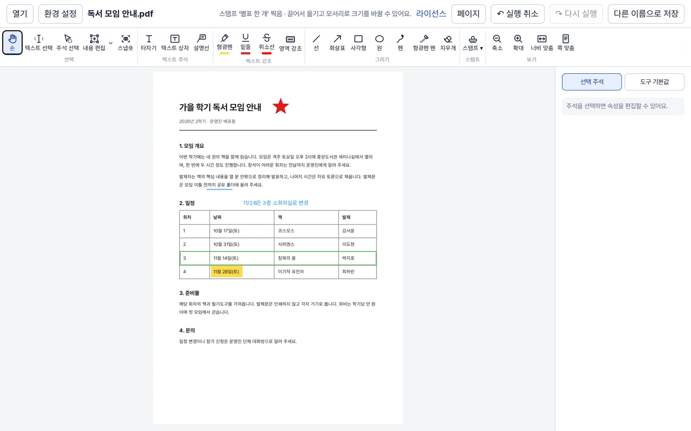

PDF에 바로 쓰고, 표시하고, 정리합니다
글자 넣기와 형광펜, 도형, 도장, 쪽 편집을 한 창에서 합니다. 문서는 내 기기 안에서만 처리되고 원본은 그대로 남습니다.

기능
글자 넣기
타자기, 텍스트 상자, 설명선으로 원하는 자리에 글을 씁니다. 글꼴과 크기, 색을 고를 수 있습니다.
강조
형광펜, 밑줄, 취소선을 글자에 맞춰 긋고, 글자가 없는 곳은 영역으로 칠합니다.
그리기
선, 화살표, 사각형, 원, 펜. 펜으로 그은 획은 지우개로 하나씩 지웁니다.
도장
별표 도장이 들어 있고, 자주 쓰는 그림을 내 도장으로 등록해 둘 수 있습니다.
쪽 편집
쪽 순서 바꾸기, 복제, 삽입, 회전, 삭제를 미리 보면서 합니다.
안전한 저장
항상 다른 이름으로 저장하므로 원본을 덮어쓰지 않습니다. 저장한 파일은 다른 PDF 프로그램에서도 그대로 보입니다.
내려받기
| 파일 | 크기 | SHA-256 |
|---|---|---|
| Windows 설치판 | 34.9MB | e76b774ee149f368bef1d519347ae464dbd11382facf3d1089486a13963f71e8 |
| Windows 휴대용 | 45.2MB | 15a0f578513067d177ae0821c56b469346a2563577bb545799ce935465bb4f2b |
| Android | 준비 중 | |
- 설치판은 관리자 권한 없이 현재 사용자 계정에 설치됩니다. 기본 PDF 프로그램은 바꾸지 않습니다.
- 휴대용은 압축을 모두 푼 뒤 PDFEditor.exe를 실행합니다.
- 처음 실행할 때 Windows 보호 화면이 나오면 ‘추가 정보’를 누른 뒤 ‘실행’을 선택합니다.
- Microsoft Edge WebView2 런타임이 필요합니다. Windows 11과 최신 Windows 10에는 이미 들어 있습니다.